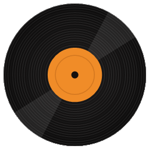
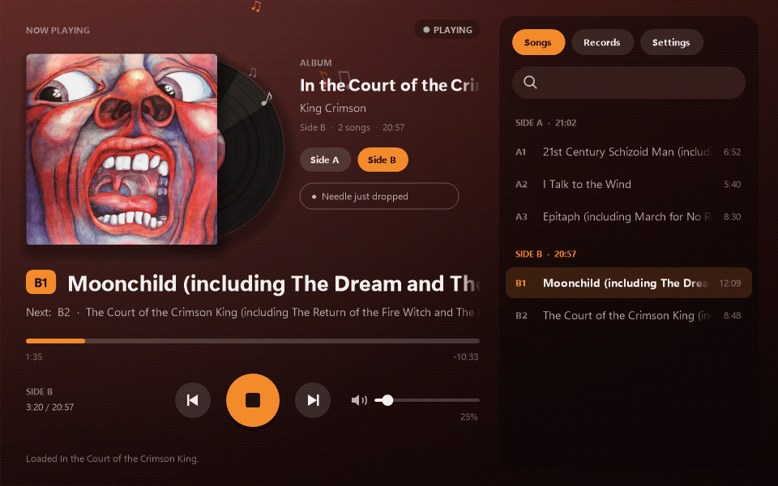
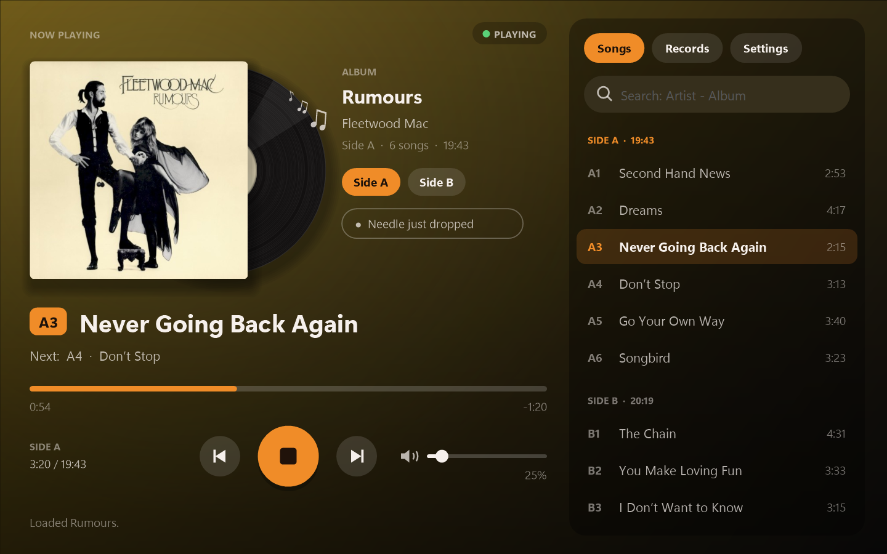
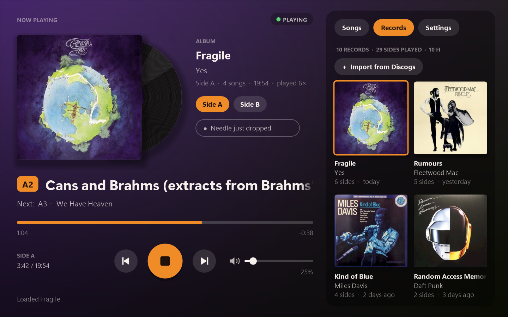
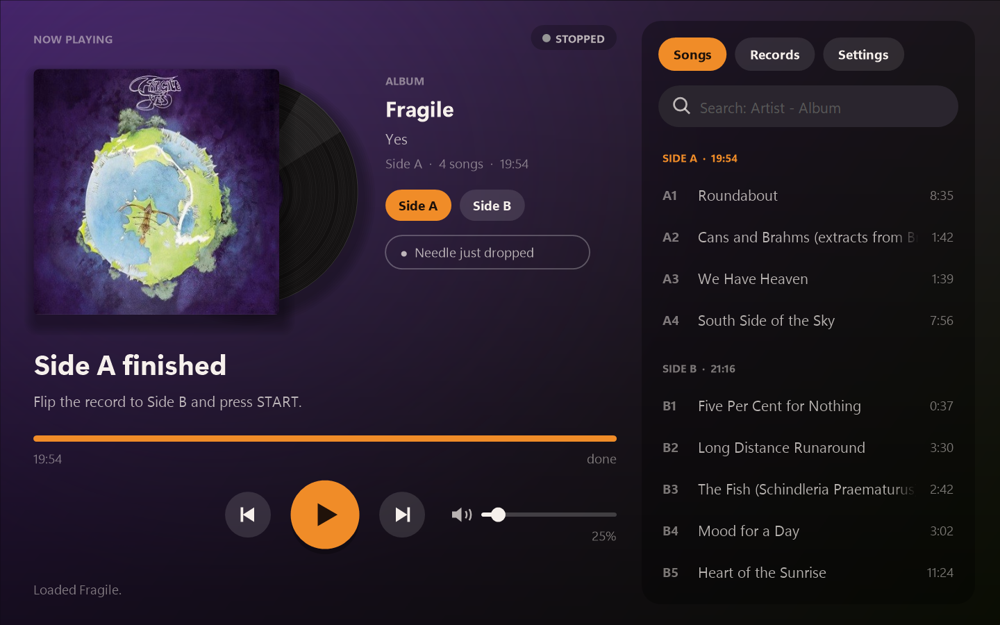
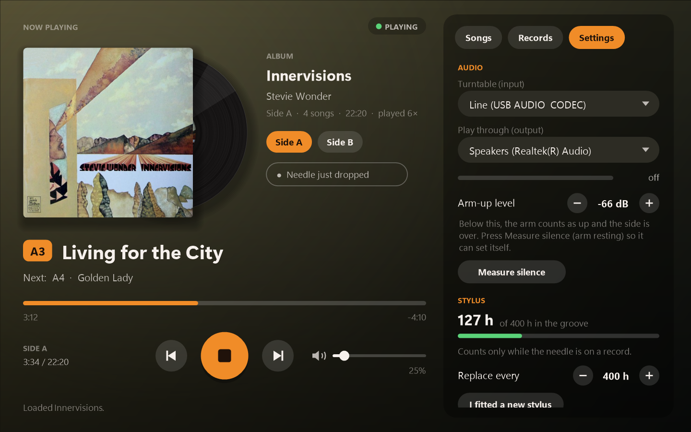

Turntable ListenerPlug in a USB turntable and hear it through your speakers or headphones, with the album cover, the song that's playing, a nudge when it's time to flip, and your vinyl on Discord and Last.fm.

It listens to your turntable and works out what's happening, so you can just drop the needle.
Plays your USB turntable through any speakers or headphones, with its own volume and a level meter.
Search an album once to get its cover and tracklist by side. It follows along and shows what's playing.
Hears the arm lift at the end of a side and lets you know, with an optional chime.
Show "Listening to" with the album art on Discord, and log every song to Last.fm or ListenBrainz.
Every album you play lands on a shelf of covers with play counts. Import your Discogs collection too, then click a cover to put it on.
Counts how long the needle has been in the groove and reminds you when it's due for replacing.
The backdrop takes its colours from the album you're playing, and the record bounces along to the music.




No installer. A short setup finds your turntable and learns what its silence sounds like.
Grab the zip, unzip it anywhere (Documents is fine), and open TurntableListener.exe.
Plug it in with USB. The setup suggests the right input, usually "USB Audio CODEC".
That's it. Search for the album to get the cover and song names, and it takes care of the rest.
Any turntable that connects to your PC with a USB cable and shows up in Windows as a recording device. That includes models from Sony, Audio-Technica and many others. Bluetooth-only turntables aren't supported.
You search for the album once. It gets the tracklist and song lengths from MusicBrainz, starts timing when the music begins, and re-syncs at the quiet gap between songs. You can nudge it with the previous/next buttons or by dragging the progress bar.
No. Sound from your turntable is only played and measured on your PC. Nothing is recorded or uploaded. See privacy below for what does go online.
Album searches go to MusicBrainz and covers come from the Cover Art Archive. Discord, ListenBrainz and Last.fm only see what you're playing if you turn them on, and Discogs is only contacted if you import from it. Once a day it checks GitHub for a new version. Your settings, history and sign-ins stay on your PC, and sign-ins are encrypted with your Windows account. There's no tracking or analytics.
Please open an issue and say which turntable you have. If the app showed an error, attach crash.log (Settings → About → Open the data folder). For side-detection problems, turn on the diagnostics log in the same place, play a side, and attach levels.log.